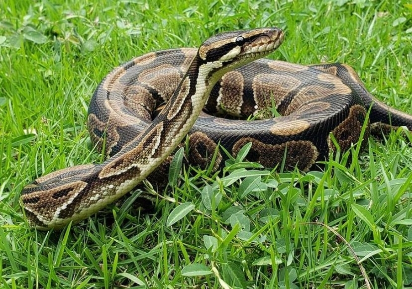

Serpiente constrictora de cuerpo macizo, su esperanza de vida alcanza los 40 años. Mata a sus presas por constriccion, enrollandose alrededor de su cuerpo. Es una piton terrestre, aunque tambien trepa y es una excelente nadadora e hiberna durante varios meses.
Los pitones tienen fosas nasales que les permite detectar el calor de sus presas.
Los pitones tienen pulmones y pelvis.
A los pitones les encanta el clima tropical.
Debido a su gran tamaño, se mueven para delante y regularmente en linea recta.
Algunos pitones son tan grandes que comen monos, cerdos, wallabies y antilopes.